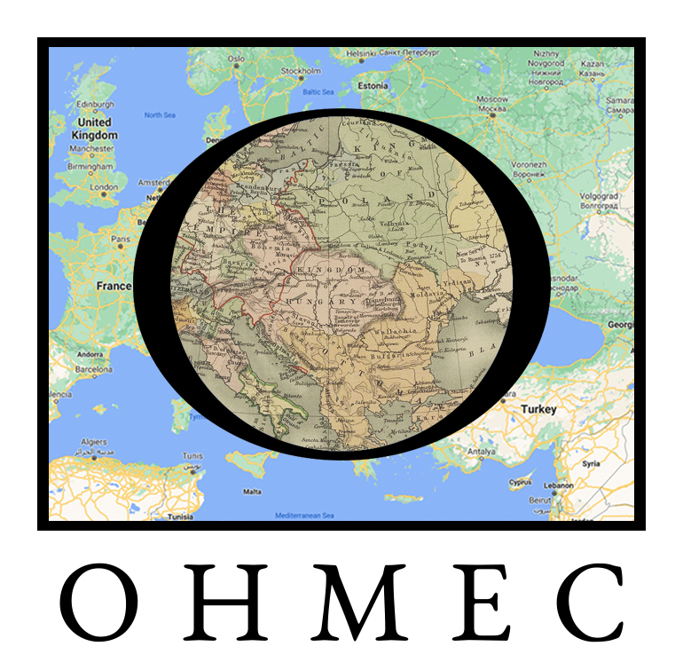

|  | Open History Map Exploration |
The OHMEC project is a free, open-source geography project, with a goal of representing all historical indigenous lands and political boundaries in a unified database. The uniqueness of OHMEC is its ability to represent these lands and boundaries on any date, as well as being able to show the dynamic changes in lands and boundaries from any point in history to the present. It is very much a work in progress. This early demonstration shows a rendering of data in the North American arena using Leaflet to display geographical polygons from the database, overlaid on top of a modern map.
The OHMEC project is being developed openly in a Github repository. Participation is welcome, see that repo for more information on the management of the project. Also see this slidedeck for more insight into the project. A specification of the extended GeoJSON format that underpins the historical database is provided here. For information or any questions, please use ohmec.contact@gmail.com.
This Viking study shows a brief highlight of pre-Viking peoples in the northern European arena from roughly 15000BC to 6000BC. This was an early experiement with modeling tribal movements as well as the effect of geographical changes in the form of receding ice sheets.
At this time, there are 0 polygons rendered in the database(s).
To recreate this viewpoint, use the following direct link:
URL
{kind=link}